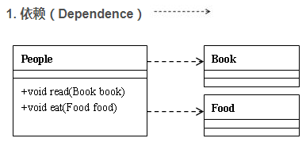

设计模式中类的关系

依赖关系的定义为：对于两个相对独立的对象，当一个对象负责构造另一个对象的实例，或者依赖另一个对象的服务时，这两个对象之间主要体现为依赖关系。
类上面的图例中：People类依赖于Book类和Food类，Book类和Food类是作为类中方法的参数形式出现在People类中的。
public class People
{
//Book作为read的形参
public void read(Book book)
system.out.print("读的书是"+book.getName());
}

对于两个相对独立的对象，当一个对象的实例与另一个对象的一些特定实例存在固定的对应关系时，这两个对象之间为关联关系。
单向关联表现为：类A当中使用了类B，其中类B是作为类A的成员变量。双向关联表现为：类A当中使用了类B作为成员变量；同时类B中也使用了类A作为成员变量。
//双向关联
public class Son
{
//关联关系作为成员变量的类一般会在类中赋值
Father father=new Father();
public void getGift()
system.out.println("从"+father.getName()+"获得礼物");
}
public class Father
{
Son son=new Son();
public void setGift()
system.out.println("送给”+son.getName()+"礼物");
}

聚合关系是关联关系的一种，耦合度强于关联。关联关系的对象间是相互独立的，而聚合关系的对象之间存在着包容关系，他们之间是“整体-个体”的相互关系。
public class People
{
Car car;
House house;
public void serCar(Car car)
{
this.car=car;
}
public void setHouse(House house)
{
this.house=house;
}
public void driver()
{
System.out.println("车的型号"+car.getType());
}
public void sleep()
{
System.out.println("我再房子里睡觉"+house.getAddress());
}
}

聚合，组合是一种耦合度更强的关联关系。存在组合关系的类表示“整体-部分”的关联关系，“整体”负责“部分”的生命周期，他们之间是共生共死的；并且“部分”单独存在时没有任何意义。
public class People
{
Soul soul;
Body body;
public People(Soul soul,Body body)
{
this.soul=soul;
this.body=body;
}
public void study()
{
System.out.println("学习需用灵魂"+soul.getName());
}
public void eat()
{
System.out.println("吃饭用身体”+body.getName());
}
}